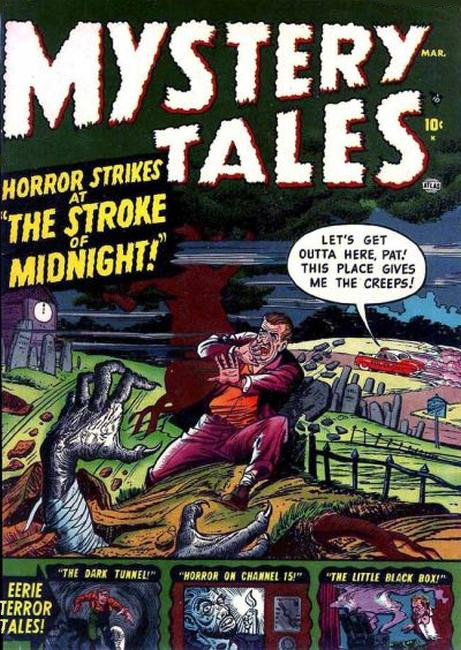

Series: 54 issues 1952-1957
Publisher: Atlas, Marvel
Science fiction/horror anthology. This series was one of five such anthologies launched in a six-month period, increasing Atlas's SF line from seven to twelve books. It ran until the collapse of Atlas's distributor and the subsequent restructuring known as the "Atlas Implosion".
Issue #1:
- "The Dark Tunnel" art by Gene Colan. An exterminator enters into a dark tunnel on one of his jobs and is taken captive by giant telepathic cockroaches who are waiting for mankind to destroy itself before they emerge and rule Earth.
- "The Doll of Doom" text story.
- "The Little Black Box!" script by Hank Chapman, art by Joe Maneely. A man finds a black box which grants him wishes when he tells a lie; When he gets the black box open, the spirit inside incinerates him to take his place.
- "The End of the World" art by Paul Reinman. A carnival swami predicts the world will end at midnight. His skeptic client scoffs at the prediction, but the man's words haunt his thoughts for the rest of the evening. When the clock begins to strike twelve, he is distracted by it, and doesn't see the vehicle that strikes and kills him.
- "The Horror on Channel 15" art by Pete Tumlinson. A man in a small Iowa town creates a monster for a TV show that comes to life and kills everyone in the town.
- "The Stroke of 12" art by Paul Reinman. An embalming assistant murders an undertaker for his money, but when he goes to the cemetery at midnight where he hid the money, the undertaker drags him into the grave with him.